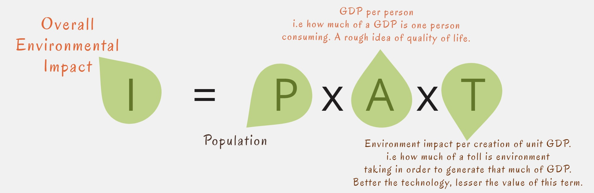
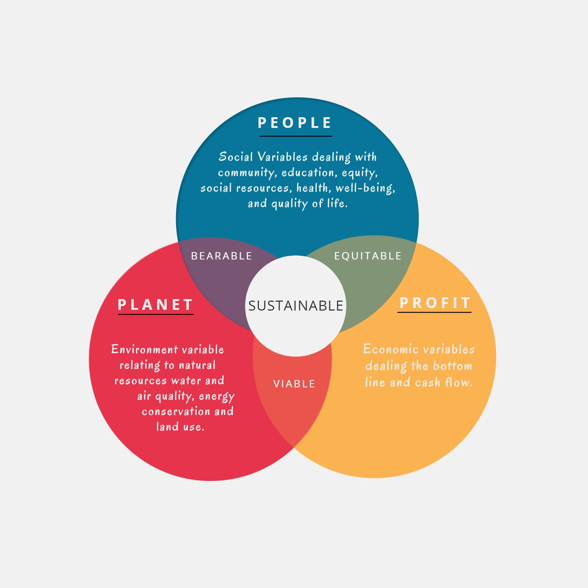

What is sustainability and what can we do about it?
A man’s nightmare can be other man’s utopia.
Before starting just ask yourself a question, wouldn’t it be great if we don’t have to worry about switching off the lights every time we leave the room, or if we could draw out as much fuel as we need at nominal rates, or we don’t have to worry about the aquatic conditions of the river before sending wastes into it? - Many of us still don’t downright worry about this but at least we have started to develop a sense of guilt. Wouldn’t it be great if we can get rid of this guilt and use these world the way we want.
A person living in the twentieth century had just these privileges. He had open skies, pristine rivers and a healthy atmosphere capable of taking mankind’s rising thirst for development. Industries were coming up at an unprecedented rate without any regards for the environment. Skies and rivers were considered as an incessant dump for any industrial or household by-product and agenda of sustainability could never top the priority charts. This unscrupulous act made mankind slither into a situation where the above questions cannot be ignored. We might sometimes think- “if only our forefathers had any regards towards the environment we would have a lot more of a planet to live on!”
Now, try to view this case from a perspective of a person living two centuries ahead of us. He might ponder- “wouldn’t it be great if we could get electricity throughout the day or if clean water was a free commodity. Also I don’t like the idea of wearing a mask every time I leave the home I wish the air could have been cleaner. “If only our forefathers had any regards towards the environment we would have a lot more of a planet to live on!”- Situation two generations beyond that can be lot more precarious. [It’s not rhetoric, but very real - Beijing Tradegy]
Well, this is why the threat of climate change is so dangerous, we have to look at the trends over centuries to understand its implication. This can be the scene only if we continue on our current path of environmental deterioration. A lot of efforts has been made around the world to avoid such a scenario and I encourage all of you to be a part of it in your own capacity.
From the Books
When asking what sustainability or sustainability Development is to ourselves, generally a fifth grade definition pops up which goes something like:-
“ ...it is a development that meets the needs of present without compromising the ability of future generation to meet their own needs.”
this is one of the most quoted definitions of sustainability and was first issued in a report by World Commission on Environment and Development in 1987, entitled “Our Common Future” (also known as the Brundtland report).
The Brundtland definition however is too abstract for project planning and thus Executive orders have developed more functional definition that are aligned with their specific goals and values.
“Sustainability” and ”Sustainable” mean to create and maintain conditions, under which humans and nature can exist in productive harmony, that permit fulfilling the Social, Economic, and other requirements of present and future generations (FederalRegister, 2009)
Note that the definition includes the Economics aspect as well. Many state that there are just two sources of pollution- luxury and convenience and may suggest life of abstinence is what sustainable development demands, that although being true does not provide a very practical solution for tackling the problem at hand. We cannot make sustainability an integral part of development cog unless there is the sense of profitability attached to it. Abstinence can be an individual’s choice, but can never be that of an organisation.
The IPAT Equation
Sustainability more often than not, depends upon the synergy of the system with its environment.The synergy of the people with the environment is characterized by the IPAT equation. According to which the overall environmental impact is the product of populatio, affluence and technology.
I=PxAxT.
Where, I = the overall Environmental Impact, P= Population A= Affluence T= Technology.
The affluence in the above equation can be denoted as the GDP produced per capita.
i.e A = (GDP )/Person,
This is roughly the estimate for quality of living. This factor varies substantially among different countries and regions, responding to the forces of local and global economic conditions, the stage of historical and technological development, government factors and so on.
The third and the most important term in the equation is primarily the representation of technology and can be expressed as the ratio of environmental impact made per unit of GDP created.
T=(Enviornmental Impact)/(unit GDP.)
When we talk about the Sustainable technology or engineers role towards sustainability, we primarily focus on this particular term. Better and efficient technology means higher production while keeping the Impact constant, or reducing the impact while keeping the production constant.
For instance, it is likely that a shoe industry working with rudimentary instruments and techniques would produce more environmental impact than the next door industry with state of the art energy efficient tools to produce same units of goods.
So the more popular form of the IPAT equation can be expressed as follows:-
Environmental Impact = Population x GDP/Person x (Environmental Imapct)/(Unit GDP Created)
The triple Bottom Line.
As the above equation suggests, sustainability is about three Ps, People (Social Implications), Planet (environmental implications) and Prosperity (or profit, the economical implication). Ignoring any of these would not fulfil it’s true essence.
So can check for the sustainability of any design or system by keeping in mind the following four points:-